This section covers Elementary Constructions or ECons - atomic building blocks - used throughout the triangle constructions in an abbreviated form to avoid the clutter.
Perpendicular to a Line Through a Point on it
See Ruler and Compass 02 article under Experiments section.
Perpendicular to a Line Through a Point Not on it
See Ruler and Compass 02 article under Experiments section.
Parallel to a Line Through a Point
See Ruler and Compass 02 article under Experiments section.
Center of a Circle
See Ruler and Compass 02 article under Experiments section.
Tangent to a Circle
See Samples article under g section.
Perpendicular Bisector
Cut the given line segment \(AB\) in half:
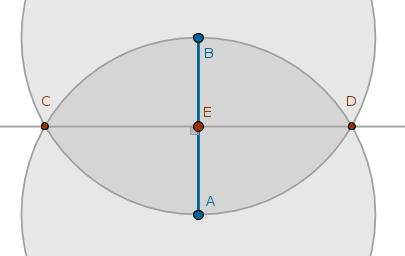 $$Cir(A, AB) \cap Cir(B, BA) = C, D \colon AC = BC = AD = BD$$ $$Ln(C, D) \cap Ln(A, B) = E \colon AE = EB$$
Angle Bisector
Cut the given angle \(\angle ABC\) in half:
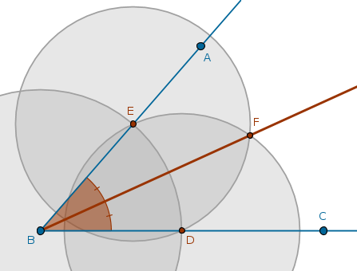 $$D \in Ln(B, C)$$ $$Cir(B, BD ) \cap Ln(B, A) = E \colon BE = BD$$ $$Cir(D, DE) \cap Cir(E, ED) = F$$ $$Ln(B, F) \colon \angle ABF = \angle CBF$$
Copy of an Angle
Make a copy of a given angle \(\angle ABC\) with the vertex at the given point \(X\) on the given line \(Ln(D, E)\):
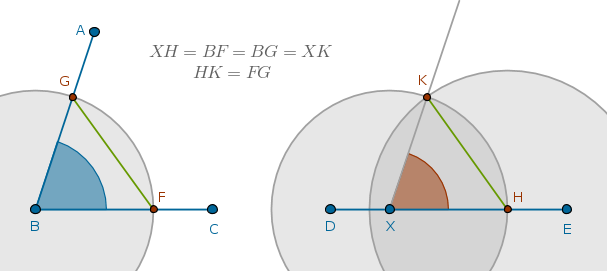 $$F \in Ln(B, C)$$ $$Cir(B, BF) \cap Ln(B, A) = G \colon BG = BF$$ $$Cir(X, BF) \cap Ln(D, E) = H \colon XH = BG = BF$$ $$Cir(H, FG) \cap Cir(X, BF) = K \colon HK = FG, XK = XH$$ $$Ln(X, K) \colon \angle KXH = \angle ABC$$
Sum of Two Line Segments
Construct a line segment equal to the sum of two given line segments, \(a\) and \(b\):
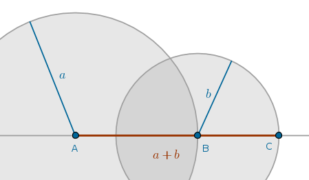 $$Cir(A, a)$$ $$Cir(B \in Cir(A, a), b)$$ $$Ln(A, B) \cap Cir(B, b) = C \colon AC = a + b$$
Difference of Two Line Segments
Construct a line segment equal to the difference of two given line segments, \(a\) and \(b\):
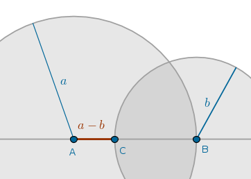 $$Cir(A, a)$$ $$Cir(B \in Cir(A, a), b)$$ $$Ln(A, B) \cap Cir(B, b) = C \colon AC = a - b$$
Product of Two Line Segments
Construct a line segment equal to the product of two given line segments, \(a\) and \(b\):
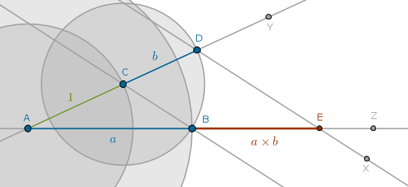 $$A, Z$$ $$Ln(A, Z)$$ $$Cir(A, a) \cap Ln(A, Z) = B \colon AB = a$$ $$Y \not= Z$$ $$Ln(A, Y)$$ $$Cir(A, 1) \cap Ln(A, Y) = C \colon AC = 1$$ $$Ln(B, C)$$ $$Cir(C, b) \cap Ln(A, Y) = D \colon CD = b$$ $$X \colon Ln(D, X) \| Ln(B, C)$$ $$Ln(D, X) \cap Ln(A, Z) = E \colon BE = a \times b$$
Ratio of Two Line Segments
Construct a line segment equal to the ratio of two given line segments, \(a\) and \(b\):
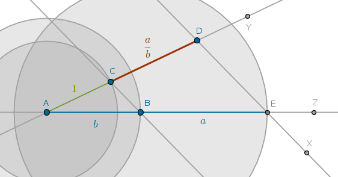 $$A, Z$$ $$Ln(A, Z)$$ $$Cir(A, b) \cap Ln(A, Z) = B \colon AB = b$$ $$Cir(B, a) \cap Ln(A, Z) = E \colon BE = a$$ $$Y \not= Z$$ $$Ln(A, Y)$$ $$Cir(A, 1) \cap Ln(A, Y) = C \colon AC = 1$$ $$Ln(B, C)$$ $$X \colon Ln(E, X) \| Ln(B, C)$$ $$Ln(E, X) \cap Ln(A, Y) = D \colon CD = \frac {a}{b}$$
Square Root of a Line Segment
Construct a line segment equal to the square root of the given line segment \(a\):
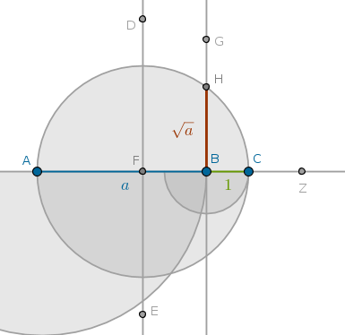 $$A, Z$$ $$Ln(A, Z)$$ $$Cir(A, a) \cap Ln(A, Z) = B \colon AB = a$$ $$Cir(B, 1) \cap Ln(A, Z) = C \colon BC = 1$$ $$D, E \colon Ln(D, E) \cap Ln(A, C) = F \colon AF = FC$$ $$Cir(F, FC)$$ $$G \colon Ln(B, G) \bot Ln(A, Z)$$ $$Ln(B, G) \cap Cir(F, FC) = H \colon BH = \sqrt {a}$$
Internal Division of a Line segment in a Given Ratio
Divide a given line segment \(AB\) in the given ratio:
$$\frac {m}{n}$$where \(m\) and \(n\) are whole numbers, internally
To divide a given line segment \(AB\) in a given ratio \(m \div n\), where \(m\) and \(n\) are whole numbers, internally means to find a point \(X\) on the line \(AB\) between the points \(A\) and \(B\) such that arithmetically:
$$\frac {XA}{XB} = \frac {m}{n}$$or geometrically:
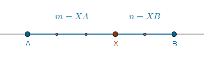The generic solution then is to divide the given line segment into \((m + n)\) equal parts and to count either \(m\) such parts from \(A\) towards \(B\) or \(n\) such parts from \(B\) towards \(A\) to locate the point \(X\).
Here is a sample construction for dividing \(AB\) in the \(\frac {3}{2}\) ratio internally. Since \(3 + 2 = 5\) we divide \(AB\) into \(5\) equal parts and count \(3\) such parts from \(A\) towards \(B\) to locate \(X\):
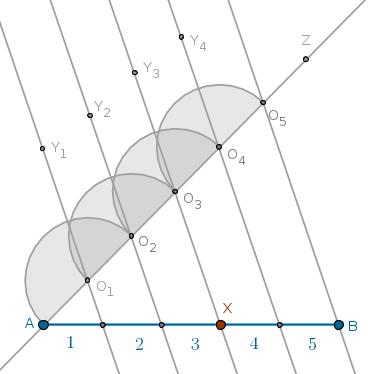 $$Z \notin AB$$ $$Ln(A, Z)$$ $$O_1 \in Ln(A, Z)$$ $$Cir(O_1, O_1A) \cap Ln(A, Z) = O_2$$ $$Cir(O_2, O_1A) \cap Ln(A, Z) = O_3$$ $$Cir(O_3, O_1A) \cap Ln(A, Z) = O_4$$ $$Cir(O_4, O_1A) \cap Ln(A, Z) = O_5$$ $$Ln(B, O_5)$$ $$Y_1 \colon Ln(Y_1, O_1) \| Ln(B, O_5)$$ $$Y_2 \colon Ln(Y_2, O_2) \| Ln(B, O_5)$$ $$Y_3 \colon Ln(Y_3, O_3) \| Ln(B, O_5)$$ $$Y_4 \colon Ln(Y_4, O_4) \| Ln(B, O_5)$$ $$Ln(Y_3, O_3) \cap Ln(A, B) = X \colon \frac {XA}{XB} = \frac {3}{2}$$If a given ratio can not be expressed in terms of whole numbers and instead is given as a line segment divided in a certain way then Euclid's B6.P10 can be used: "to cut a given uncut straight line similarly to a given cut straight line".
External Division of a Line Segment in a Given Ratio
Divide a given line segment \(AB\) in the given ratio:
$$\frac {m}{n}$$where \(m\) and \(n\) are whole numbers, externally.
To divide a given line segment \(AB\) in a given ratio \(\frac {m}{n}\), where \(m\) and \(n\) are whole numbers, externally means to find a point \(X\) on the line \(AB\) not between the points \(A\) and \(B\) such that arithmetically:
$$\frac {XA}{XB} = \frac {m}{n}$$or geometrically:
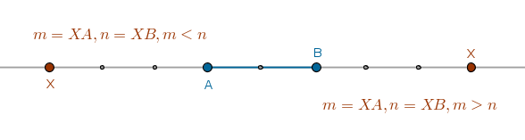The generic solution then is to divide the given line segment into \(|m - n|\) equal parts and to count the number of such equal parts equal to the greater number of the given ratio towards the opposite point of the given line segment to locate the point \(X\).
In either case we divide the given line segment into \(|m - n|\) equal parts. If \(m > n\) then we count \(m\) such parts from \(A\) towards \(B\) to locate the point \(X\) which will be closer to \(B\). If \(n > m\) then we count \(n\) such parts from \(B\) towards \(A\) to locate the point \(X\) which will be closer to \(A\).
Here is a sample construction for dividing \(AB\) in the \(\frac {5}{3}\) and \(\frac {3}{5}\) ratios externally. Since \(|5 - 3| = 2\) we divide \(AB\) into \(2\) equal parts. In the \(\frac {5}{3}\) ratio \(m = 5 > 3 = n\) so we count \(5\) such equal parts from \(A\) towards \(B\) to locate \(X\) which is closer to \(B\).
In the \(\frac {3}{5}\) ratio \(m = 3 < 5 = n\) so we count \(5\) such equal parts from \(B\) towards \(A\) to locate \(X\) which is closer to \(A\):
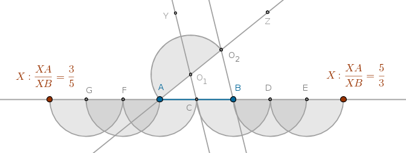 $$Z \notin AB$$ $$Ln(A, Z)$$ $$O_1 \in Ln(A, Z)$$ $$Cir(O_1, O_1A) \cap Ln(A, Z) = O_2$$ $$Ln(B, O_2)$$ $$Y \colon Ln(Y, O_1) \| Ln(B, O_2)$$ $$Ln(Y, O_1) \cap Ln(A, B) = C \colon 2 \times CA = AB$$ $$Cir(B, BC) \cap Ln(A, B) = D$$ $$Cir(D, BC) \cap Ln(A, B) = E$$ $$Cir(E, BC) \cap Ln(A, B) = X \colon \frac {XA}{XB} = \frac {5}{3}$$ $$Cir(A, AC) \cap Ln(A, B) = F$$ $$Cir(F, AC) \cap Ln(A, B) = G$$ $$Cir(G, AC) \cap Ln(A, B) = X \colon \frac {XA}{XB} = \frac {3}{5}$$If a given ratio can not be expressed in terms of whole numbers and instead is given as a line segment divided in a certain way then a slightly modified Euclid's B6.P10 can be used.
Let's assume that a given line segment \(AB\) must be divided externally in the given \(LK\) to \(LM\) ratio of the given \(KM\) line segment. If \(LK > LM\) then the point \(X\) will be closer to \(B\), construct an arbitrary angle at \(A\):
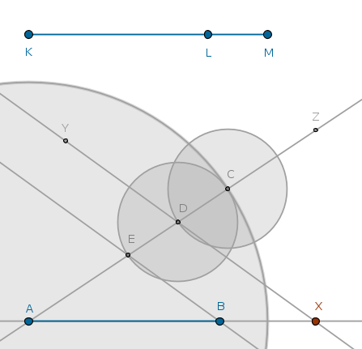 $$Z \notin Ln(A, B)$$ $$Ln(A, Z)$$ $$Cir(A, KM) \cap Ln(A, Z) = C \colon AC = KM$$ $$Cir(C, LM) \cap Ln(A, Z) = D \colon DC = LM$$ $$Cir(D, LM) \cap Ln(A, Z) = E \colon ED = LM$$ $$Ln(B, E)$$ $$Y \colon Ln(Y, D) \| Ln(B, E)$$ $$Ln(Y, D) \cap Ln(A, B) = X \colon \frac {XA}{XB} = \frac {LK}{LM}$$On the other hand, if \(LK < LM\) then the point \(X\) will be closer to \(A\), construct an arbitrary angle at \(B\):
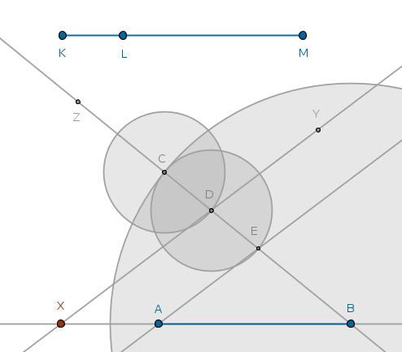 $$Z \notin Ln(A, B)$$ $$Ln(B, Z)$$ $$Cir(B, KM) \cap Ln(B, Z) = C \colon BC = KM$$ $$Cir(C, LM) \cap Ln(B, Z) = D \colon DC = LM$$ $$Cir(D, LM) \cap Ln(B, Z) = E \colon ED = LM$$ $$Ln(A, E)$$ $$Y \colon Ln(Y, D) \| Ln(A, E)$$ $$Ln(Y, D) \cap Ln(A, B) = X \colon \frac {XA}{XB} = \frac {LK}{LM}$$\(\blacksquare\)